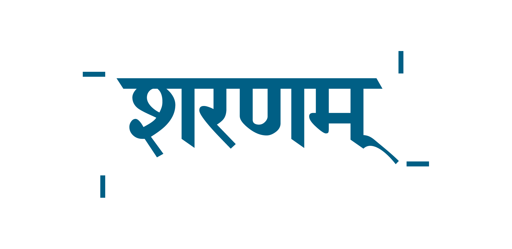

Project Management Consultants
Sharnam Portal
Module Delivery Status
& Go-Live Readiness
A client presentation on system modules, delivery status, and the testing plan to reach full operational go-live.
1. Executive summary
Sharnam Portal is a single online workspace per construction project — drawings, quality, safety, progress, cost, communications, reports, CRM bids, and HR — with SharePoint (ISO 19650) as the document store.
128 portal tools12 workspaces · 18 module areas · built since 15 Jul 2026
SharePoint integrated80+ ISO folders; module exports auto-file to SharnamProjects
DPR → WPR hub7 disciplines feed 24 WPR sections · branded ExcelJS export
Go-live gateSep 8–19 UAT · S1–S10 security · M1–M8 multi-user · all roles
Test hard · use early · hand over Fri Sep 19. ~147 UAT scenarios (HP, edge, negative, multi-user, mobile). Office + site start daily use Mon Sep 8 on DMS, directory, field modules while testing continues. Calendar: SPDC_TWO_WEEK_UAT_PLAN.md · Scenarios: SPDC_UAT_SCENARIO_BANK.md.
| Dimension | Status today |
|---|
| Core modules | Live — 128 tools, 74 Excel sheet mappings, 500+ API endpoints |
| Directory sign-off | Live — PNG per person in DMS → branded checklist Excel |
| CRM comparative bids | Live — two-bidder demo, BOQ → SharePoint 05.05 / 05.06 |
| Contractor portal | Live — bids + RFI/NCR responses; registers read-only |
| Production operation | UAT pending — requires Phases A–E + S/M gates below |
Bottom line: Feature-complete for PMC demo and pilot UAT. Full operation needs testing on your server, real project data, signed acceptance per module, and concurrent-user hardening.
Live demo script: SPDC_FE_DEMO_RUNBOOK.md — 55 numbered steps across 3 sessions with seeded record IDs.
2. Module delivery matrix
Live built & demo-ready UAT needs sign-off Pilot seed data; live Excel pending
| # | Module | Status | What works today | ✓ |
|---|
| 1 | Master & directory | Live | Project create, modules, people, sign-off register → DMS | ☐ |
| 2 | Drawings / GFC | Live | Register, revisions, drawing check gate, SharePoint publish | ☐ |
| 3 | Documents (DMS) | Live | ISO tree, upload, PDF preview, SharePoint links | ☐ |
| 4 | Quality | Live | Dashboard, SOR, QI, NCR/CAR, cube register, QAP, checklists | ☐ |
| 5 | Safety & HSE | Live | NCR, SPDC HSE F-01 IR, checklist fills, HSE SharePoint | ☐ |
| 6 | Inspection register | Live | Quality / Safety / Activity F-01 & F-02, Excel + PDF export | ☐ |
| 7 | Comms & RFIs | Live | Matrix, MoM, follow-up, classic + checklist RFIs | ☐ |
| 8 | Progress & PvA | Live | Milestones, S-curve, planned vs actual tables | ☐ |
| 9 | Cost & cashflow | Pilot | BOQ monitoring, MB/BBS, three cashflow views | ☐ |
| 10 | Finance (RA/COP) | Pilot | RA submission, COP certification chain on UAT seed | ☐ |
| 11 | Reports — DPR | Live | Discipline DPR maker, SharePoint publish | ☐ |
| 12 | Reports — WPR | Live | Weekly pack, branded Excel export, CAPEX from budget WBS | ☐ |
| 13 | CRM & bids | Live | Lead → bid → two-bidder R2 comparative → SharePoint procurement | ☐ |
| 14 | HRMS | Pilot | Attendance selfie+GPS, leave, payslip demo, geofence | ☐ |
| 15 | Audit & KPI | Live | Audit dashboard, findings register | ☐ |
| 16 | Closure | Live | Snaglist, lessons learnt | ☐ |
| 17 | Client portal | Live | Read-only progress, reports, published GFC | ☐ |
| 18 | Contractor portal | Live | Bid BOQs, RFI/NCR responses, checklist fills only | ☐ |
3A. Sheet & data-flow integration (DPR ↔ WPR)
DPR is the daily hub; WPR rolls up 24 sections in the client weekly format. Each portal tool maps to an Excel workbook tab.
Cost BOQ/MB/BBS ──▶ DPR Maker (7 disc.) ──▶ WPR Maker (24 sections)
QI checklist / NCR / CAR / Cube / QAP ──▶ DPR quality block ──▶ WPR §Quality
Safety IR / HSE obs / TBT ──▶ DPR HSE block ──▶ WPR §Safety
MS Project XML ──▶ Progress PvA + S-curve ──▶ WPR progress slides
| Source | Portal path | DPR | WPR |
|---|
| QI checklist | Checklists → Quality | Inspection count | Quality · compliance |
| NCR / CAR | Quality → NCR/CAR | Open count | Quality list |
| Cube register | Quality → Cube | Cast/test today | Test agency summary |
| Safety checklist | Checklists → Safety | HSE statistics | Safety slide |
| Manpower | Progress registers | Manpower table | WPR manpower |
| Published DPR | DPR Maker | — | Regenerate source |
Demo flow: Fill checklist (site) → Publish DPR → Regenerate WPR → Download Client XLSX — same seeded counts throughout.
3B. Register files → ISO folders (Excel / CSV / PDF)
Every portal register drops into its designated ISO folder when you Refresh registers → drive (DMS) or publish from Quality tools. Module Files pages browse the same tree.
| Register | Portal path | ISO folder (under project) | Format |
|---|
| QAP weekly plan | Quality → QAP → Publish / Dump logs | 08.01_Quality_Plans_and_Inspection_Test_Plans | XLSX + CSV |
| Cube test register | Quality → Cube → Publish / Dump logs | 08.03_Testing_Test_Report_Control | XLSX + CSV |
| NCR / CAR log | Quality → NCR/CAR + Dump logs | 08.06_Control_of_Nonconforming_Output | CSV + per-NCR XLSX |
| Checklist submissions | Checklist logs + Dump logs | 08.02_Inspection_Checklists_Pour_Cards | CSV |
| RFI correspondence | Drawings / Comms RFIs + Dump logs | 03.06_Correspondence_Control | CSV + RFI XLSX |
| Safety / observations | Safety module + Dump logs | 08.07_Hazard_Identification_Risk_Assessment | CSV |
| GFC drawings | Drawings → publish revision | 04.02_Drawings_and_Specifications/{discipline} | PDF / DWG |
| Flat mirror (all logs) | DMS → _Registers/ | _Registers/{RFI|Quality|Safety|Progress|…} | CSV index |
Where to view: Project → any module → Files tab (e.g. Quality files) — portal records table + SharePoint folder browser. Run npm run db:seed on a fresh server to pre-fill demo registers on SPDC-DEMO-01.
3C. Contractor bid portal (open packages & award status)
| Step | Who | Path |
|---|
| 1 · Open bid package | Office | /crm/bids → create package → Open bid & notify |
| 2 · Upload discipline BOQs | Contractor | /login/vendor → /crm/vendor-bids — Fill online or Upload Excel per discipline (Structural, Civil, …) |
| 3 · Comparative & L1/L2 | Office | /crm/bids — section totals, grand totals, SharePoint 05.06 master |
| 4 · Award status | Both | Vendor sees Awarded badge + L1 on package card; office locks package on award |
Demo logins: vendor@sharnam.demo (M/s Bhavna Infra) · nkinra@sharnam.demo (M/s Nikhra Infra) · password Demo@1234 · project SPDC-DEMO-01.
4. Two-week UAT (8–19 Sep 2026)
All roles · module finals · security S1–S10 · multi-user M1–M8 · daily → weekly → monthly → closure workflows on portal.spdc.in.
Week 1
| Day | Focus | Gates |
|---|
| Mon 8 | Kick-off · DMS · directory · all logins | S1–S5 |
| Tue 9 | Drawings · RFIs · comms | M5 · S2 |
| Wed 10 | Quality · NCR · inspection | M4 · S3–S4 |
| Thu 11 | Safety · daily workflow | Daily |
| Fri 12 | DPR · progress | M1 · M2 |
Week 2
| Day | Focus | Gates |
|---|
| Mon 15 | WPR weekly · client pack | Weekly |
| Tue 16 | Cost · finance · CRM | M3 · M7 |
| Wed 17 | HRMS · audit | M6 |
| Thu 18 | Monthly + closure · synthetic week | M8 · all roles |
| Fri 19 | Final sign-off | S6–S10 · M1–M8 |
| Cadence | Workflows | Roles |
|---|
| Daily | Checklists · DPR · attendance · safety | Site, vendor |
| Weekly | WPR · QAP · MoM | Office, client |
| Monthly | Audit · cashflow · client pack | Office, client |
| Closure | Snag · lessons learnt | Office, site, client |
Calendar: SPDC_TWO_WEEK_UAT_PLAN.md
Phase D — Commercial & CRM (Week 4)
| # | Test | Owner | Pass |
|---|
| D1 | CRM comparative bid: two bidders, L1/L2 totals | Office | ☐ |
| D2 | Contractor BOQ edit → SharePoint 05.05/{vendor}/{discipline} | Vendor | ☐ |
| D3 | Master comparative refreshes in 05.06 on save | Office | ☐ |
| D4 | Cost monitoring + cashflow chart | Office | ☐ |
| D5 | RA bill → COP certification | Office + vendor | ☐ |
Phase E — Security gates (S1–S10)
| Gate | Test | Pass |
|---|
| S1 | Unauthenticated API → 401 | ☐ |
| S2 | Cross-project URL → no data leak | ☐ |
| S3 | Client cannot upload drawings | ☐ |
| S4 | Vendor cannot edit registers | ☐ |
| S5 | Oversized upload rejected | ☐ |
| S6 | Audit log on NCR close | ☐ |
| S7 | Directory signature: self or office only | ☐ |
| S8 | SharePoint path scoped to project code | ☐ |
| S9 | JWT invalid after credential change | ☐ |
| S10 | No secrets in git; prod keys on server | ☐ |
Phase E — Multi-user concurrent (M1–M8)
Run with 5 browser profiles on SPDC-UAT-LIVE. No row loss, no cross-user overwrite.
| # | Scenario | Users | Pass |
|---|
| M1 | Two site users, different DPR disciplines, same date | site ×2 | ☐ |
| M2 | Site publishes DPR while office Regenerates WPR | site + office | ☐ |
| M3 | Bhavna + Nikhra edit different BOQ disciplines | vendor ×2 | ☐ |
| M4 | Office closes NCR while contractor fills action | office + vendor | ☐ |
| M5 | Two stakeholders respond different RFIs | struct + mep | ☐ |
| M6 | Directory signature + checklist XLSX download concurrently | office ×2 | ☐ |
| M7 | Vendor BOQ save during comparative refresh | vendor + office | ☐ |
| M8 | Client read-only while office publishes drawing | client + office | ☐ |
Phase E — Infrastructure
| # | Test | Owner | Pass |
|---|
| E4 | Production email notifications | IT | ☐ |
| E5 | Backup & restore drill | IT | ☐ |
| E6 | Performance at scale | IT | ☐ |
| E7 | Client acceptance sign-off | SPDC lead | ☐ |
5. Path to operational go-live
Today (demo ready) → Weeks 1–4 UAT → Workbook sign-off → Production
portal.spdc.in office+site+client all Pass ☐ live project data
6. Sign-off — operational readiness
| Role | Name | Date | Signature |
|---|
| SPDC Project Director | | | |
| SPDC IT / SharePoint | | | |
| PMC Office lead | | | |
| Site lead | | | |
| HSE / Quality lead | | | |
| Development team | | | |
Demo logins (password: Demo@1234)
| Role | Email | URL |
|---|
| Office | office@sharnam.demo | /login/office |
| Site | site@sharnam.demo | /login/site |
| Contractor (Bhavna) | vendor@sharnam.demo | /login/vendor |
| Contractor (Nikhra) | nkinra@sharnam.demo | /login/vendor |
| Client | client@sharnam.demo | /login/client |